vuosi 2021
Joulukuu
22.12.
Pian on loppumassa jälleen yksi koiraharrastusvuosi. Olen todella iloinen ja onnellinen, että jälleen kuluneena vuonna kasvattejani on nähty niin kokeissa, luonnetesteissä kuin näyttelykehissäkin. Aktiivi-ikäisten GM's-koirien lukumäärä alkaa olla jo aika pieni, tämänkin vuoden aikana kaksi kasvattiani on jälleen matkannut sateenkaarisillan toiselle puolelle; Turbo helmikuussa ja Bono toukokuussa. Olen kiitollinen, että olen saanut olla tänäkin vuonna mukana kasvattieni elämässä, niin iloissa kuin ongelmahetkissäkin. Toivotankin kaikille ihanaa joulunaikaa ja paljon mukavia yhteisiä hetkiä ensi vuodelle valkoisten ystävienne kanssa! ♥︎

12.12.
Pirjon ja Karpon (GM's Dude Has A Point) mahtavat tokosuoritukset jatkuivat tänään Oulussa.
Tällä kertaa tuloksena oli 186,5 pistettä ja sillä tietenkin kaksikon toinen ALO1-tulos, KP ja sijoitus 1/4.
Hurjan isot onnittelut jälleen kerran, taitavia olette!

Otsikko
27.11.
Karpo (GM's Dude Has A Point) ja Pirjo tokoilivat tänään Kempeleessä; käsittämätön kymppirivi ja mukana yksi yhdeksän! Lopputulos 198 pistettä, ALO1-tulos, KP ja sijoitus 1/8! Valtavan isot onnittelut!

19.11.
Nette ja Gizmo (GM's Cheeky Gremlin) osallistuivat tänään Suomen Valkoinenpaimenkoira ry:n rallytokomestaruuskisoihin. Tuloksena ALO-luokasta hienosti 91 pistettä! Onnea!
Lokakuu
23.10.
Gizmo (GM's Cheeky Gremlin) ja Nette tekivät rally-toko-debyyttinsä tänään Liedossa Pia Heikkisen tuomaroimassa kokeessa, tuloksena ensikertalaisille hienot 81/100 pistettä alokasluokassa. Hyvä Nette ja Gizmo!
16.10.
Karpo (GM's Dude Has A Point) ja Pirjo starttasivat tänään Oulussa rally-tokon alokasluokassa, ja tulos oli hieno 98 pistettä ja sijoitus ALO-luokassa 5/20. Paljon onnea!
9.10.
Tänään Uuraisilla pidettyihin Close-Knit Team ry:n tokokokeisiin osallistui kaksi kasvattiani, Kelmi ja Kajo. Kelmi (GM's Charming Rogue) ja Tanja tekivät upean ALO1-tuloksen pisteillä 189,5 ja KP ja sillä saavutettiin myös luokkavoitto (sijoitus 1/5)! Tuhannesti onnea Tanja ja Kelmi!
Heidi ja Kajo (GM's Dawn Full Of Joy) olivat aivan ensimmäisissä tokokokeissaan, ja lopun pieni herpaantuminen vei ykköstuloksen mutta saavutuksena hieno ALO2-tulos pisteillä 149. Onnittelut myös Heidille ja Kajolle!

GM's Charming Rogue KELMI toko ALO1, KP, sij. 1/5
Karkki (GM's Cracker Bonbon) osallistui puolestaan Kaarinassa järjestettyyn luonnetestiin, jossa tuomareina olivat Tarja Matsuoi ja Lea Haanpää.
Karkkihan sai hylätyn luonnetestituloksen vuonna 2018 kun koira sai laukausaltis-arvion. Tänään testi sujui suunnilleen samalla tavalla kuin ensimmäiselläkin kerralla, toimintakyky oli kohtuullinen (aiemmin kohtuullisen pieni), taisteluhalu kohtuullisen pieni (aiemmin kohtuullinen) ja temperamentti erittäin vilkas (aiemmin kohtuullisen vilkas) ja nyt ampumisesta tuli laukauskokematon. Muuten testin osa-alueet olivat täysin samat kuin vuonna 2018.
Loppupisteet olivat siis +140, laukauskokematon, ja hyväksytty luonnetesti.
Kiitos Karoliina ja paljon onnea! ♥︎

Syyskuu
23.9.
Luonnetestin jälkeisenä päivänä 19.9. otettiin Sansan, Karpon, Kajon ja Velhon viralliset spondyloosi- ja olkakuvat, ja tulokset tulivat Kennelliitosta tänään. Kaikkien neljän koiran tulokset olivat SP0 ja olkanivelen osteokondroosin suhteen terve/terve.
18.9.
Niin se aika rientää; tänään oli D-pentujen luonnetestipäivä! Ikää koirilla on 2 vuotta ja 2 kuukautta, ja Trickiä lukuunottamatta muut D-lapset pääsivät tähän samaan testiin. Testipaikkana oli Jyväskylä/Korpilahti ja tuomareina Jorma Kerkkä ja Reijo Hynynen.
Näiden neljän, Sansan, Kajon, Karpon ja Velhon, testit olivat pieniä sävyeroja lukuunottamatta hyvin samanoloiset. Myös pisteiden, niin osa-aluepisteiden kuin kokonaispisteidenkin osalta tulokset olivat lähellä toisiaan. Kukaan ei saanut myöskään miinuspisteitä miltään osa-alueelta, ja testit olivat varsin sen näköiset mikä käsitys minulla koirista olikin.
Yhteispisteet olivat:
Velho (GM's Dashing White Wizard) +155, laukauskokematon
Kajo (GM's Dawn Full Of Joy) +157, laukausvarma
Karpo (GM's Dude Has A Point) +155, laukauskokematon
Sansa (GM's Daring Queen Of Fantasy) +140, laukauskokematon
Osa-aluepisteet ja linkki luonnetestivideoihin on jokaisen koiran omalla sivulla (KASVATIT -> D-PENTUE ->)
Lämmin kiitos jälleen kerran teille kasvattieni omistajille, että tulitte paikalle ja mahdollistitte näin sen että koirat saatiin samaan testiin! Kiitos myös seurasta ja kiinnostuksesta muille paikalle tulleille ystäville! ♥︎
11.9.
Tänään lähdettiin Sansan kanssa kolmansiin toko-kokeisiin, tällä kertaa Seinäjoelle. Tuomarina toimi Henna Hautakoski ja kokeen järjesti Lakeuden Koiraharrastajat.
Paikkamakuussa Sansa ennakoi maahan menon ja kaukokäskyissä hiukan sekoiltiin myös kaksoiskäskyjen kanssa, mutta muuten homma hoitui ihan kivasti ALO1-tulokseen oikeuttavan pistemäärän verran, ja samalla saatiin sitten se TK1-koulutustunnus.
Nyt saakin tokoilu riittää ainakin toistaiseksi ja treeneissä keskitytään taas pk-tottikseen ja maastoihin.


4.9.
Tänään Jyväskylän Killerillä näytelmissä valkkarit arvosteli Jouni Nummela ja Karpo (GM's Dude Has A Point) ja Sansa edustivat GM-teamia. Karpo ja Pirjo olivat lähteneet ajamaan paikalle ennen kukonlaulua, ja se todellakin kannatti tänään! Karpo upeasti AVO ERI/1, SA, PU2 ja SERTI! Hienoa, upeaa, tuhannesti onnea!

Karpo (GM's Dude Has A Point)
Sansa oli tämän päivän tuomarin mielestä liian matala ja lyhyt, muuten oikein kivan näköinen. Sansa ei itse edes yrittänyt parantaa "ensivaikutelmaa" hyppimällä ja hillumalla silloin kuin olisi pitänyt ravata kauniisti... mutta tokihan tätäkin hommaa voisi joskus harjoitella hiukan tämän villilapsen kanssa. Enemmänhan me juostaan juurikin niin että Sansa todellakin saa hyppiä ja hillua ja taistella minun kanssani... :-)
No, tulos kiva AVO ERI/3 tänään!
Elokuu
28.8.
Ja tokoilu senkun jatkuu! Tänään oli Sansalla ja minulla ohjelmassa toinen alokasluokan toko-koe joka samalla oli Keski-Suomen piirinmestaruuskoe. Osallistuimme Close-Knit Teamin kanssa piirinmestaruuskokeen joukkuekisaan viiden hengen joukkueella, jossa Sansan kanssa olimme myös mukana. Joukkueessamme oli yksi osallistuja EVL:ssä, yksi AVO:ssa ja kolme ALO:ssa. Alokasluokassa kokeeseen ja joukkueeseemme osallistuivat myös Tanja ja Kelmi (GM's Charming Rogue).
Sansa oli jälleen innokas ja tarkka tekijä, ja tällä kertaa ryhmäpaikkamakuun maahanmenot ja ylösnousut menivät loistavasti. Kunnes... viimeisenä liikkeenä ollut estehyppy, ja Sansa-neiti päätti kiertää esteen! Tätä ei ole tapahtunut sen paremmin treeneissä kuin viime viikon kokeessakaan, en yhtään tiedä miksi tänään näin. Mutta joka tapauksessa saatiin 174 pistettä ja ALO1-tulos.
Kelmi ja Tanja keräsivät pisteitä 142, jä se oikeutti heidät ALO2-tulokseen.
Joukkuekisaan oli ilmoitettu 5 joukkuetta, ja kun pisteet lopulta laskettiin, oli meidän joukkue hopealla! Hyvä meidän Close-Knit Team!


Sansa seuraa :-)

Close-Knit Teamin joukkueen nelijalkaiset! Takarivissä vasemmalta lukien Ruti, Sansa ja Kelmi, edessä vasemmalla Viima ja vieressä Vipa.
22.8.
Tehtiin Sansan kanssa tänään molemmat debyytti tokoilun saralla! Osallistuttiin Kangasalla alokasluokkaan varsin pikaisella toko-treenillä, mutta suurimmaksi osaksi suoritus meni yllättävänkin hyvin! Ainoa varsinainen ongelma oli se, että Sansa meni ryhmäpaikkamakuussa sekä maahan että nousi lopuksi perusasentoon veireisen koiran ohjaajan käskiessä omaa koiraansa. Tästä ennakoinnista rokotettiin reippaasti, mutta saatiin silti 177 pistettä ja ALO1-tulos sijoituksella 5/13. Sansa on aika kiva harrastuskaveri!

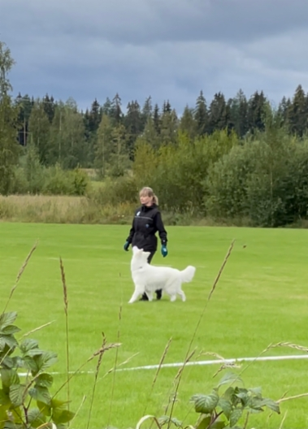
15.8.
Karpo (GM's Dude Has A Point) ja Pirjo starttasivat tänään ensimmästä kertaa vepen AVO-luokassa, josta tällä kertaa saavutuksena AVO3-tulos. Onnea!
1.8.
Tänään Sansa pääsi elämänsä toiseen näyttelyyn, ja nyt jo sitten avoimeen luokkaan! Käytiin Mikkeli KV-näyttelyssä, jossa valkkarit arvosteli Maarit Hassinen. Päivä oli kovin harmaa ja sateinen, ja paikalle ajeltiin Sansan kanssa kahdestaan, joten hiukan tylsältä tuntui ajatus koko näyttelystä. Vaan kyllähän se sitten lopulta käydä kannatti; valkkarikehän aikana aurinko jo pilkisteli pilvien takaa ja Sansa esiintyi oikein kivasti prinsessana! Tuloksena tänään AVO ERI/1, SA, PN1, SERT, CACIB ja ROP! Hyvä Sansa!
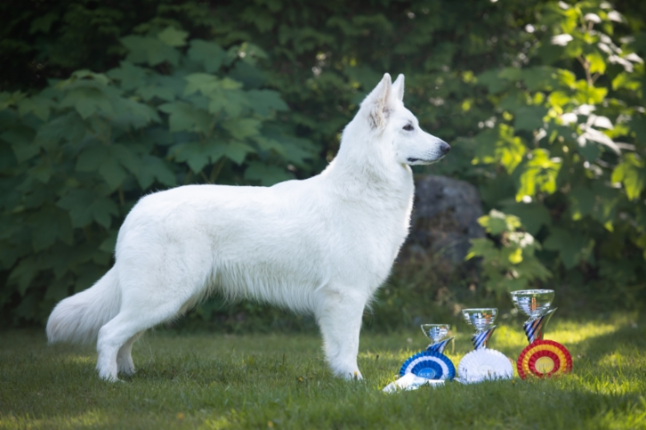
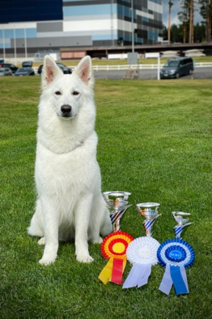
Näyttelypaikallakin jo vähän poseerattiin pystien kanssa! :-)
Heinäkuu
31.7.
Karpo (GM's Dude Has A Point) esiintyi tänään Luumäellä ryhmänäyttelyssä, jossa valkkarit arvosteli Paavo Mattila. Tuloksena hieno AVO ERI/2! Onnea Pirjo ja Karpo!
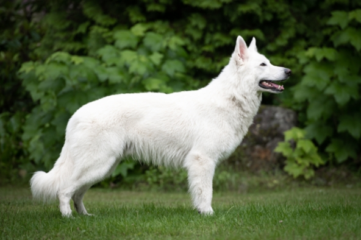
Karpon arvostelu tänään:
Kaunispäinen uros. Hyvä kaula. Erittäin hyvä runko ja luusto. Hyvä ylälinja. Sopivasti kulmautuneet hyväasentoiset raajat. Hieman korkea häntä. Karva ei aivan parhaimmillaan. Liikkuu hyvin. Seistessä hyvät ääriviivat. Hyvä käytös.
Tänään on kasvattajaurani juhlapäivä; on kulunut 12 vuotta siitä, kun ensimmäiset Gentle Miracle's-pennut syntyivät. Nämä Nellin ja Boniton lapset, joista myöhemmin kasvoi jokaisesta yksi upeimmista valkkareista joita tiedän, toivat elämääni aivan uuden sisällön, rakkaita ystäviä ja lopulta valtavan määrän ihania muistoja. On surullista, että nyt 12 vuotta myöhemmin ei yksikään näistä rakkaista ole enää täällä, mutta ehkäpä ne juhlivat syntymäpäiväänsä kaikki 9 nyt yhdessä siellä jossakin Nelli-äitinsä kanssa. ♥︎

GM's A-pennut ovat syntyneet 31.7.2009
11.7.
Karpo (GM's Dude Has A Point) ja Pirjo ovatkin aivan hurjassa VEPE-vireessä! Tänään poika uiskenteli jo toisen ALO1-tuloksen täysin pistein (100 pistettä) ja 2. sijoitus! Onnea onnea! Ja siitähän seurasikin sitten siirto avoimeen luokkaan!

7.7.
Tänään osallistuimme Sansan kanssa Keski-Suomen Palveluskoirayhdistyksen järjestämään BH-kokeeseen Uuraisilla. Tuomarina kokeessa toimi Mikael Kallio. Vaikka keli oli samanlainen kuin se on ollut jo monta viikkoa eli helteinen, +30 astetta, jaksoi Sansa tehdä hommia todella hyvin. Ja ensimmäisen kerran näin pitkään ilman palkkaa!
Tottis meni pieniä kauneusvirheitä lukuunottamatta hyvin; täyskäännöksissä takaosa saisi tulla ripeämmin mukana ja luoksetulossa oli hiukan vino eteentuloasento, mutta mielentila oli loistava, meillä molemmilla. Paikkamakuu sujui erinomaisesti, samoin kaupunkiosuus Uuraisten keskustassa.

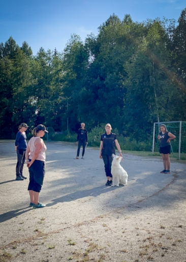
BH-koe tuli hyväksytysti siis suoritetuksi, nyt ei muuta kuin kohti uusia haasteita!
Olen kyllä valtavan tyytyväinen Sansan tekemiseen kaiken kaikkiaan; se on oikein mukava harrastuskaveri ja temperamentiltaan minulle varsin sopiva. Sansa on paitsi aina valmis hommiin, niin myös hyvin keskittymiskykyinen kun sitä vaaditaan. Suurin häiriö sille ovat toiset koirat, sen(kin) asian kanssa saadaan tehdä edelleen hommia.

BH Gentle Miracle's Daring Queen of Fantasy
2.7. ja 3.7.
Perjantaina Karpo (GM's Dude Has A Point) ja Pirjo aloittivat VEPE-uransa soveltuvuuskokeen läpäisyllä (täydet 100 pistettä!!) ja lauantaina oli sitten jo ensimmäisen alokasluokan kokeen vuoro. Eikä tämä parivaljakko huonosti sitäkään vetänyt; tuloksena ALO1, täydet 100 pistettä ja 1. sijoitus, kokeen paras koira!
Aivan HUIKEA alku vesipelastusuralle! Paljon onnea Pirjo ja Karpo!

Kesäkuu
22.6.
Heidi ja Kajo (GM's Dawn Full of Joy) suorittivat tänään hyväksytysti BH-kokeen Tikkakoskella! Tuomarina toimi Esko Hautala. Paljon onnea, tästä on enemmän kuin hyvä jatkaa!

19.6.
Pirjo ja Karpo (GM's Dude Has A Point) korkkasivat tänään rally-toko-uransa Oulussa. Ja hieno debyytti se olikin; alokasluokan ykköstulos pisteillä 92! Onnea Pirjo ja Karpo! ♥︎
Nina ja Koda (GM's Close To My Heart) puolestaan aloittivat tänään pk-uransa jälkikokeella. Tottisosuudella Koda keksi tehdä hiukan omia kuvioita ja laajoja liikkeitä, mutta maastosta tuli hienot 189 pistettä. Hieno aloitus jälkikokeille vaikka tänään ei vielä tulosta tullutkaan. Onnea ja tsemppiä jatkoon Nina ja Koda!
Toukokuu
29.-30.5.
Tänä viikonloppuna oli vihdoin hyppytekniikkakoulutuksen aika! Alkuvuodesta kyselin hyppytekniikkakouluttaja Katja Konnulta, innostuisiko hän tulemaan keväällä Jyvässeudulle viikonloppukoulutusta pitämään, ja silloin lyötiin lukkoon tämä toukokuun viimeinen viikonloppu. Paikaksi varattiin Kyynämöisten kenttä Uuraisilta, ja sitten vaan kovasti toivottiin, ettei koko viikonloppua sataisi.
Ja jee! Säiden herrat suosivat todellakin meitä; viikonloppu oli poutainen ja lämpötila juuri koiria ajatellen sopiva!
Treeniporukkamme oli noin kymmenen koirakon kokoinen, mukana kasvateistani olivat C-pentueen Kelmi sekä D-pennuista Sansa, Trick, Kajo ja Velho.
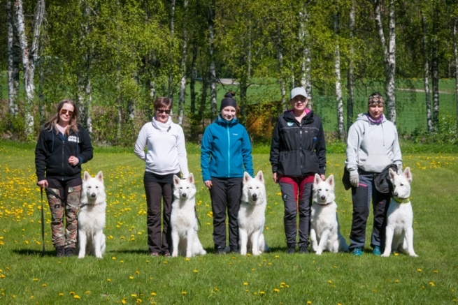
Annika ja Velho, Marjo ja Trick, Heidi ja Kajo, minä ja Sansa sekä Tanja ja Kelmi
Kaksipäiväisen koulutuksen aikana Katja (https://tikkujuttu.fi/) perehdytti meidät hyppytekniikan perusharjoituksiin ja näitä asioita jokainen koirakko harjoitteli myös käytännössä. Muistiinpanoja ei tarvinnut tehdä, koska saimme Katjan hyppytekniikan verkkokurssimateriaalin käyttöömme. Tästä sitten vaan eteenpäin kohti metristä pk-estettä!
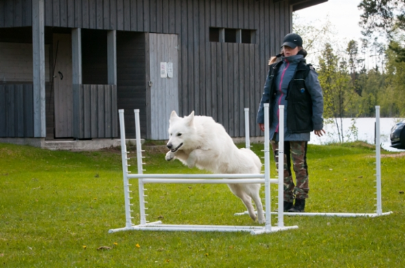
Velhon (GM's Dashing White Wizard) set-point-tyylinäyte
Sansa ja sisarukset majoittuivat Piesalan mökillä lähellä kenttää, ja niinpä samalla saatiin vietettyä pienimuotoista pentuetapaamistakin saunoen ja herkutellen, vain Karpo puuttui joukosta.
Kiitos tuhannesti Katjalle koulutuksen pitämisestä, kaikille mukana olleille koirakoille osallistumisesta ja erityiskiitos ihan parhaasta mökkiseurasta Marjolle, Heidille ja Annikalle!
27.5.
Jälleen niin surullisia uutisia... Tänään siirtyi sateenkaarisillalle B-pentueen Bono, Nellin ja Luckyn poika.
RIP Gentle Miracle's Burning Soul "BONO"
19.5.2012 - 27.5.2021
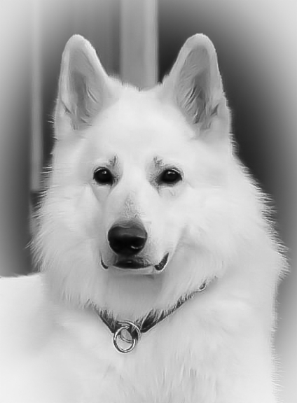
Lämmin osanottoni Tanjalle ja kaikille Bonon rakkaille ihmisille. Olen niin kiitollinen siitä, miten hyvän kodin ja elämän Bono kanssanne sai, ja vaikka terveysmurheita oli matkan varrella, jaksoitte tehdä aina parhaanne Bonoa auttaaksenne. Toivon, että kunhan suurin murhe ja ikävä hiukan väistyy, mieleen muistuvat kaikki ne ihanat ja kallisarvoiset yhteiset hetket.
Tanja; Bonon tassunjäljet ovat syvällä sydämessäsi.
19.5.
Nellin ja Luckyn lapset täyttävät tänään 9 vuotta; onnea Elvis, Bono, Camaz ja Stara! Muistoissani tänään ovat myös oma rakas Elsani sekä Manna, Fiina, Diesel ja pikkuinen Senna.
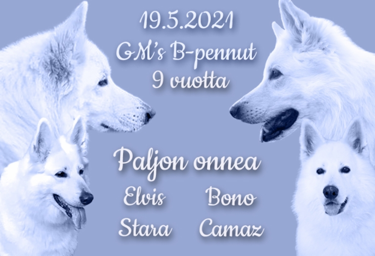
Huhtikuu
10.4.
GM's C-pennut tänään 6 vuotta! Paljon onnea jokaiselle!

Helmikuu
12.2.
Tänään päättyi lopullisesti yksi aikakausi, kun Nellin ja Boniton lapsista viimeinen muutti sateenkaaren taakse, sinne missä jalat kantavat ikuisesti.
RIP Gentle Miracle's Adorable Me "TURBO"
31.7.2009 - 12.2.2021
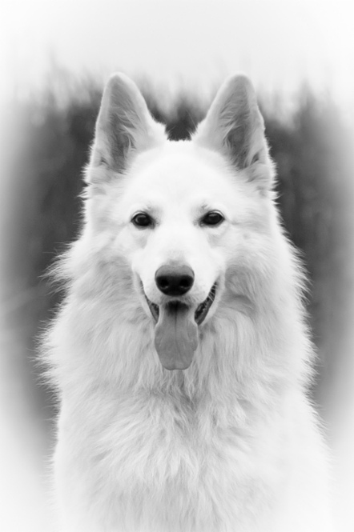
"Saanko lähteä nyt?
Luuletko, että hetki on oikea?
Saanko jättää hyvästit tuskallisille päiville
ja loputtoman pitkille öille?
Olen elämänpolkuni kulkenut ja parhaani tehnyt,
esimerkkiä yrittänyt näyttää.
Saanko siis astua toiselle puolelle
ja vapaaksi henkeni päästää?
Aluksi en tahtonut lähteä,
taistelin kaikin voimin.
Mutta nyt jokin tuntuu kutsuvan minua
kohti lämmintä ja elävää valoa.
Tahdon lähteä, tahdon todella.
On vaikeaa jäädä.
Mutta lupaan, parhaani yritän
elääkseni vielä yhden päivän.
Niin sinä saat minusta vielä kerran huolehtia
ja minä kokea suuren suurta rakkautta.
Tiedän, että olet surullinen ja sinua pelottaa,
sillä tunnen kyyneleesi, jotka turkkini kostuttaa.
En ole kaukana, lupaan sen aina.
Henkeni tulee sinua seuraamaan,
minne maailmassa matkasi johtaakaan.
Kiitos, kiitos että olet minua rakastanut.
Tiedäthän, että minäkin rakastin sinua.
Siksi on niin vaikea sanoa hyvästi
ja päättää tämä elämä luonasi.
Joten pidä minua lähelläsi vielä kerran,
ja sano sanat, jotka toiveeni ois.
Koska välität minusta tuhannen verran,
annat minun nukkua jo tänään pois."
Turbo oli A-pentueen Keskisininen poika, joka meiltä pentuna lähdettyään sai rakastavan oman kodin Casperin "pikkuveljenä". Muistoissa ovat kovin monet iloiset ja jännittävätkin hetket, niin näyttelykehissä, agilityradoilla kuin aivan tavallisessa arjessa. Myöhemmin Turbo sai pikkusisko Taikan ja vielä vanhoilla päivillään Taikan tyttären Trickin laumaansa, ja vaikka varmasti välillä vauhtitytöt Turbo-papan hermoja koettelivatkin, oli se loppuun asti oman laumansa ja perheensä vankka suojelija ja puolustaja.
Marjo ja Jarkko. Tiedän, miten tärkeä ja rakas perheenjäsen Turbo on koko elämänsä teille ollut. Siksi ymmärrän, miten raastavaa oli tehdä tämä päätös ja päästää irti kun lääkkeetkään eivät enää taanneet Turbolle kivuttomia päiviä ja kun jalat eivät enää tahtoneet kantaa. Se oli viimeinen suuri rakkauden teko ystävälle. Kiitos vielä kerran kaikesta, mitä Turbolle annoitte; parhaan mahdollisen kodin, huolenpidon ja rakkauden. Olen niin kovin pahoillani, lämmin osanottohalaukseni teille. ♥︎
Turbo. Hyvää matkaa, emme unohda sinua. Vie terveiset Casperille, Nelli-äidille ja kaikille sisaruksillesi! ♥︎
RIP Gentle Miracle's A-pentue ♥︎ Ensimmäinen on aina ensimmäinen.
6.2.
Viikko sitten meillä oli tärkeä tapaaminen D-pentujen kanssa; viralliset terveystarkastukset luustokuvineen! Ikä ei koirilla riittänyt vielä selän SP-lausuntoihin, mutta niiden aika on sitten syksyllä.
Viralliset silmä-, polvi- ja sydänkuuntelutarkastukset teki Päivi Kallioniemi; kaikilla D-lapsilla kaikki priimaa!
Luustokuvien tulokset tulivat Kennelliitosta viime viikolla, ja ihan tyytyväinen olen kyllä niihin. Tämän Taikan pentueen kanssa yksi isoimmista riskeistä oli luustoterveys, ja siihen nähden kuvausten tulos oli todella hyvä!
Kiitos ihan hirmuisesti kaikki omistajat, että osallistuitte tutkimuspäivään ja kaukaakin jaksoitte ajella keskellä talvea pitkän matkan kuvausten takia! Olette ihan parhaita!
GM's Daring Queen of Fantasy
"SANSA"
Lonkat: A/A
Kyynärät: 0/1
Selkä: VA0, LTV1
Polvet: 0/0
Silmät: terveet, ei perinnöllisiä silmäsairauksia
Sydän: ei sivuääniä
DM: N/DM
MDR1: +/+
Täysi hampaisto, saksipurenta

Muiden D-pentujen terveystulokset löytyvät jokaisen omalta sivulta (KASVATIT -> D-PENTUE ->)
Tammikuu
19.1.
SAnsa ja muut D-pennut tänään 1,5 vuotta
Onnea tämän merkkipaalun saavuttamisesta Trickille, Kajolle, Karpolle, Velholle ja tietysti Sansalle! Kohta päästään sitten luustokuviakin jo ottamaan!
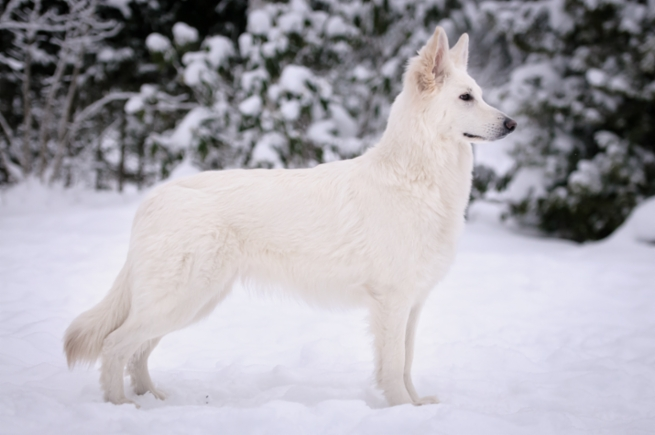
Sansa 18 kuukautta
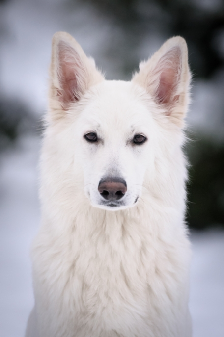
10.1.
Tänään oli Kelmi-sedän (GM's Charming Rogue) joutua/päästä Sansan leikkikaveriksi. Hiukan siinä aluksi tuumailtiin että mitenkähän ne leikit saadaan yhteen sopimaan ja kuinka tosissaan tuo toinen onkaan, mutta varsin pian löytyi yhteinen sävel "tanssiin". Tässä muutama talvinen leikkikuva.
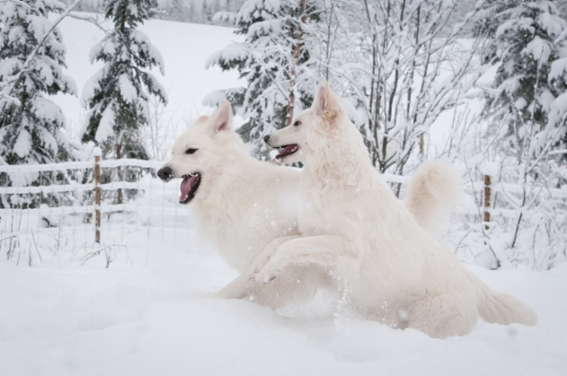
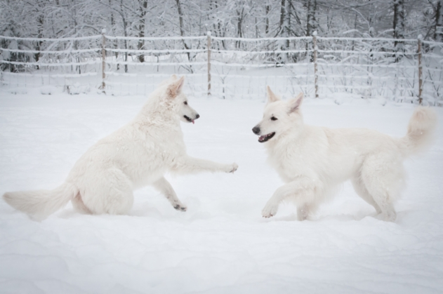
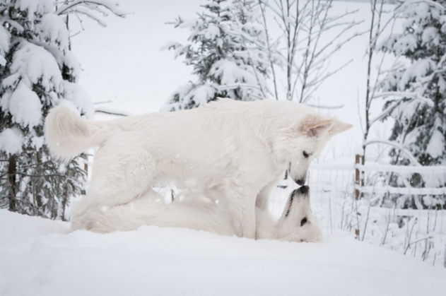
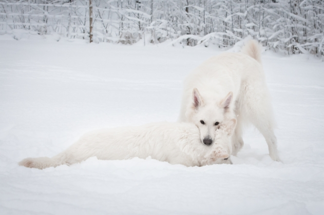
9.1.
Sansan velipoika Karpo (GM's Dude Has A Point) omistajineen poikkesi kylään! Kovasti oli Karpokin miehistynyt sitten viime näkemän, pikkuhiljaa nämäkin teinit vaan varttuvat!

Sisarukset Karpo ja Sansa

Karpo